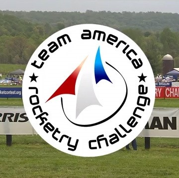
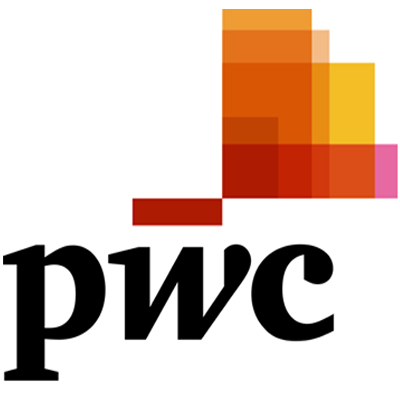
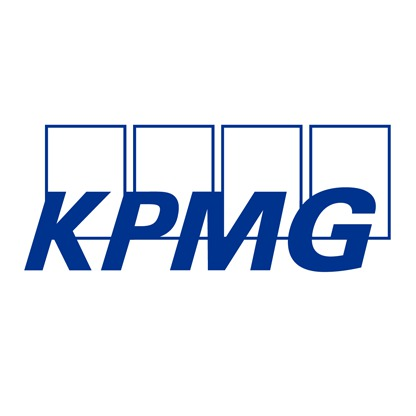

Past Projects

Team America Rocketry Challenge
August 2013 - June 2017
The Team America Rocketry Challenge (TARC) is the world’s largest student rocket contest and a key piece of the aerospace and defense industry’s strategy to build a stronger U.S. workforce in science, technology, engineering and mathematics (STEM). Despite joining the competition with no previous experience in rocket science, through years of hardwork and failure, Jane was able to lead her team to nationals twice, placing in the top 3% of the nation. Although she is pursuing a career in computer science or business, she continues to dabble in rocketry in her free time.

Boys and Girls Club STEM Program
September 2016 - June 2017
Boys and Girls Club is a non-profit organization that provides after-school programs for young people, especially the underpriveleged. Jane volunteered as a math and english tutor for elementary school children and led programs for sports and special holidays. In order to inspire and expose more children to the STEM fields, Jane created a bi-weekly program of science presentations and experiments. Each week consisted of a different subject area and included hands-on experiments to incite their interest.

PWC Case Competition
October 2017
The PWC Case Competition required teams to analyze the business model of a national grocery/gas station store and how to expand their business.

KPMG Case Competition
November 2017
The KPMG Case Competition asked teams to asses a global wine bottle cap manufacturer and strategize for the future expansion of the business.
Please feel free to reach out for more information or questions.
Thank you!